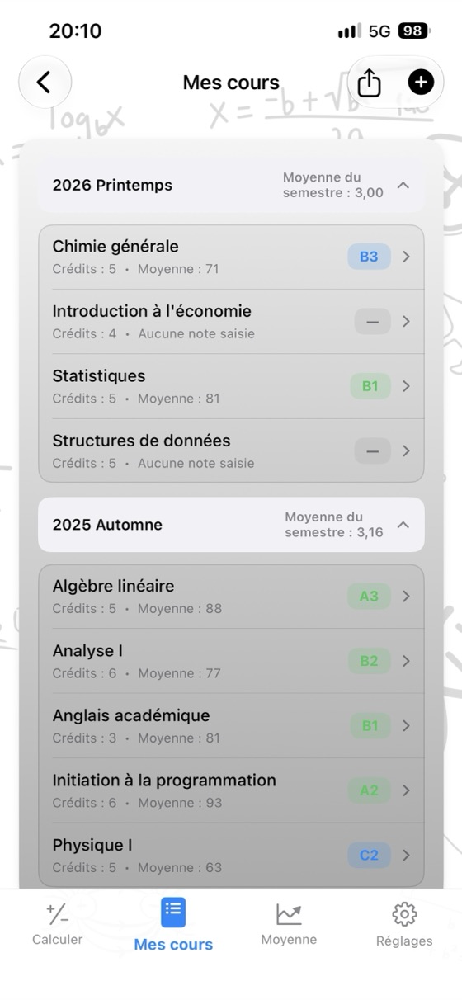
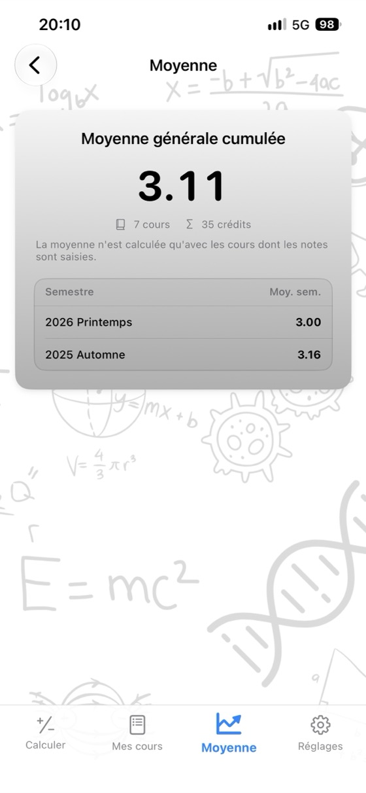
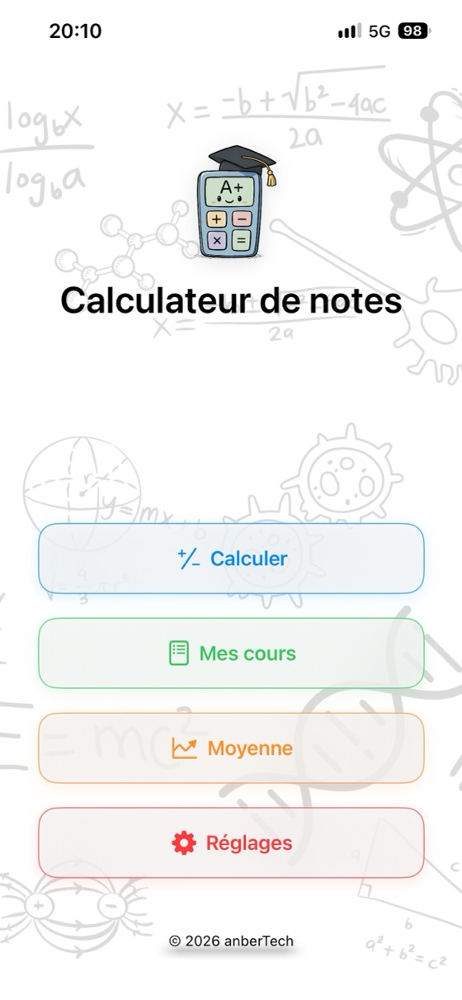
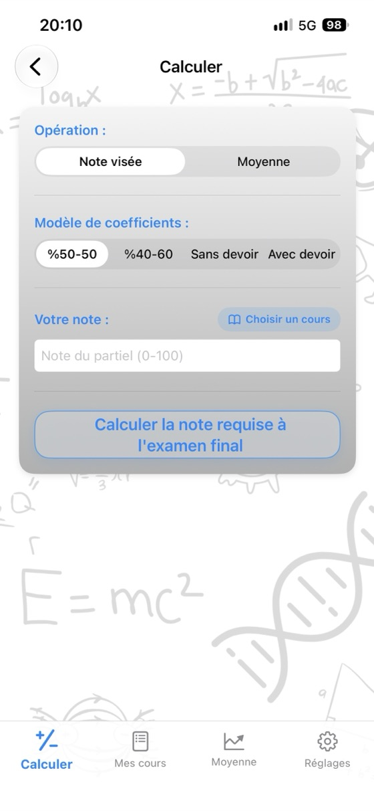
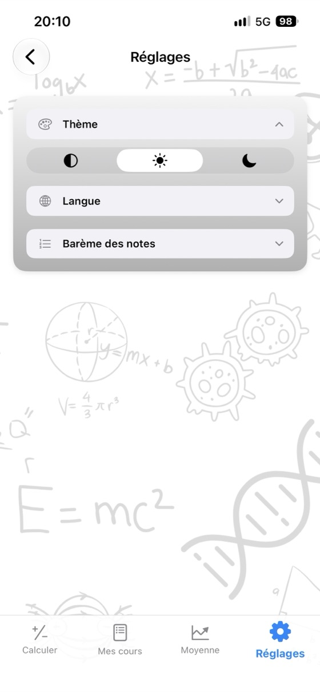

Faites le point sur vos notes,
préparez la suite.
Votre moyenne de cours, la note nécessaire à l’examen final et votre GPA dans une seule app. Sans pub, sans compte, entièrement hors ligne.
- ✓ Gratuit
- ✓ Sans pub
- ✓ Sans compte
- ✓ Hors ligne


Calculez dès maintenant
Essayez ici avant de télécharger l’app. Modifiez les valeurs : le résultat se met à jour instantanément.
Pondération du final: 60%
Pondération du final: 60%
Calculateurs gratuits
Utilisez-les dans votre navigateur, sans rien télécharger. Aucune inscription, et les notes saisies restent sur votre appareil.
Pourquoi Calculateur de notes ?
Moyenne de cours
Saisissez vos notes de partiel, de final et de devoir avec leurs pondérations pour voir instantanément votre moyenne et votre note en lettre.
Final requis
Consultez sur un seul écran la note minimale à obtenir à l’examen final pour chaque note en lettre.
Suivi du GPA
Enregistrez vos cours semestre par semestre : votre moyenne semestrielle et votre moyenne générale cumulée se mettent à jour automatiquement.
Votre propre barème
Adaptez les seuils des notes en lettre et les points associés au barème de votre établissement.
Relevé de notes PDF
Partagez vos cours et votre moyenne au format PDF en un geste.
17 langues
Anglais, espagnol, allemand, japonais, arabe, turc et bien d’autres.
Priorité à la confidentialité
Sans compte, sans pub, sans suivi. Vos données restent sur votre appareil.
Fonctionne hors ligne
Pas besoin d’Internet : en semaine d’examens, à la bibliothèque, partout.
Découvrez l’app



Questions fréquentes
Comment calculer ma moyenne de cours ?
Multipliez chaque note par sa pondération, puis additionnez les résultats. Avec un partiel à 40% et un final à 60% : moyenne = partiel × 0,40 + final × 0,60. Un partiel à 62 et un final à 75 donnent 62 × 0,40 + 75 × 0,60 = 69,8. Si vous avez un devoir, ajoutez aussi sa note pondérée ; la somme des pondérations doit être égale à 100%.
Combien me faut-il au final pour valider ?
Final requis = (moyenne visée − partiel × pondération du partiel) ÷ pondération du final. Avec un partiel à 55 qui compte pour 40% et une moyenne de 50 pour valider : (50 − 22) ÷ 0,60 = 46,7. Il vous faut donc au moins 47 au final. Calculateur de notes effectue ce calcul pour toutes les notes en lettre à la fois.
Comment calculer le GPA ?
Multipliez les points associés à la note de chaque cours (A = 4,0, B = 3,0 …) par ses crédits, additionnez les résultats, puis divisez par le total des crédits. Vous obtenez votre GPA, c’est-à-dire votre moyenne sur une échelle de 4,0.
Les seuils des notes en lettre sont-ils les mêmes partout ?
Non. Les seuils et les points associés varient selon les pays, les universités et même les cours. Dans l’app, vous pouvez modifier le barème pour qu’il corresponde exactement au vôtre.
Qu’est-ce qu’une note minimale au final ?
Certains établissements ne valident pas le cours si votre note à l’examen final est inférieure à un seuil donné (par exemple 30, 45 ou 50), même si votre moyenne est suffisante. Saisissez ce minimum : le calcul du final requis en tiendra compte.
Calculateur de notes est-il gratuit ?
Oui. L’app est gratuite sur l’App Store, sans pub, sans abonnement et sans achats intégrés. Les calculateurs de ce site sont également gratuits.
Où mes notes sont-elles enregistrées ?
Uniquement sur votre appareil. Aucun compte n’est nécessaire et rien n’est envoyé à un serveur. Les notes saisies dans les calculateurs web ne quittent jamais votre navigateur.
Existe-t-il une version Android ?
La version Android arrive bientôt sur Google Play. Pour le moment, l’app est disponible sur l’App Store pour iPhone et iPad (iOS 17.6 ou version ultérieure).
Suivez tous vos cours au même endroit
Gratuit. Sans pub. Sans compte.